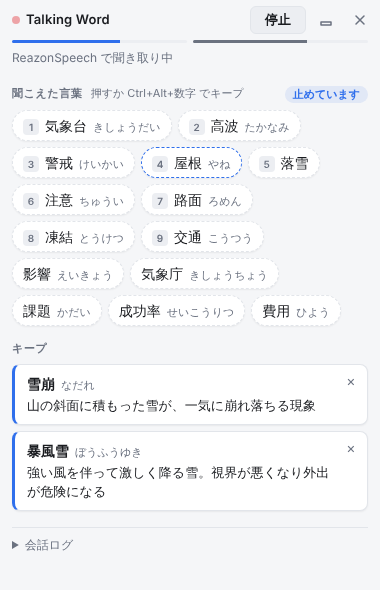
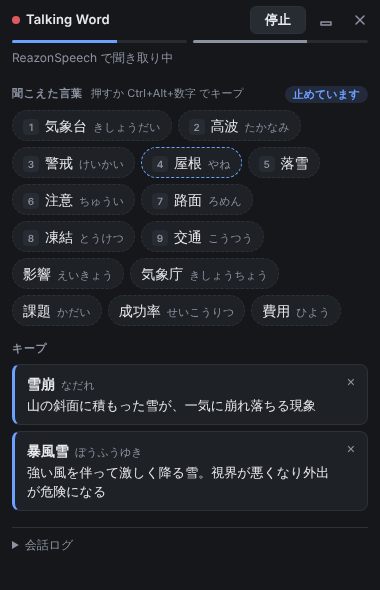
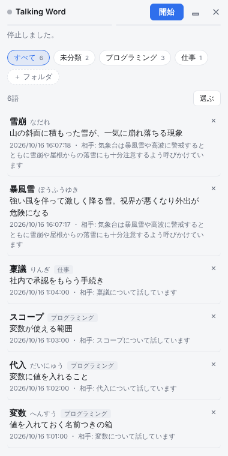

オンライン通話の会話をその場で文字にして、出てきた専門用語やカタカナ語を画面の端に並べます。気になる言葉を押せば、会話に合った意味が一文で出ます。
無料 ・ Windows 10 / 11（64ビット）・ Mac 版は準備中


PC から出る音をそのまま聞き取るので、通話アプリを選びません。自分の声はマイクから拾います。
日常語は外して、専門用語・カタカナ語・略語を並べます。拾う量は「少なめ・ふつう・多め」から選べます。
言葉を押すか Ctrl+Alt+数字 でキープ。AI が、その会話の流れに合った意味を一文で付けます。
パネルは画面共有や録画に映らないようにしています。小さな帯にたたんでおくこともできます。
キープした言葉は、意味とそのときの会話と一緒に残ります。フォルダで分けて整理できます。
Windows の色の設定に合わせて見た目が変わります。

音声は PC の外に出しません。 文字にするのは PC の中（ReazonSpeech）で行い、音声を送ったり保存したりはしません。
AI を使う場合だけ、文字にした会話の一部を、あなたが選んだ AI に送ります。Sarashina の無料ベータと Gemini の無料枠では、送った内容が学習やサービス改善に使われることがあるので、仕事の会話では有料のプランをおすすめします。
くわしくは プライバシーポリシー をご覧ください。